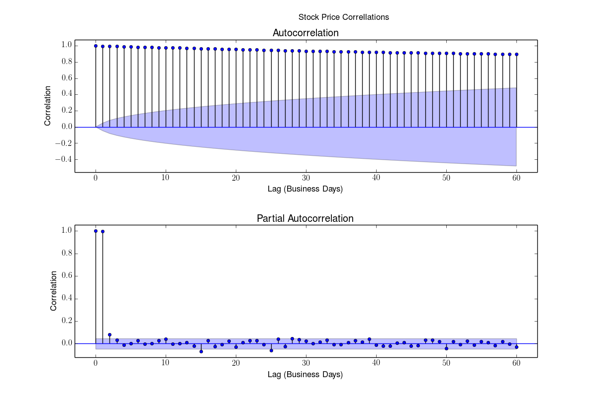
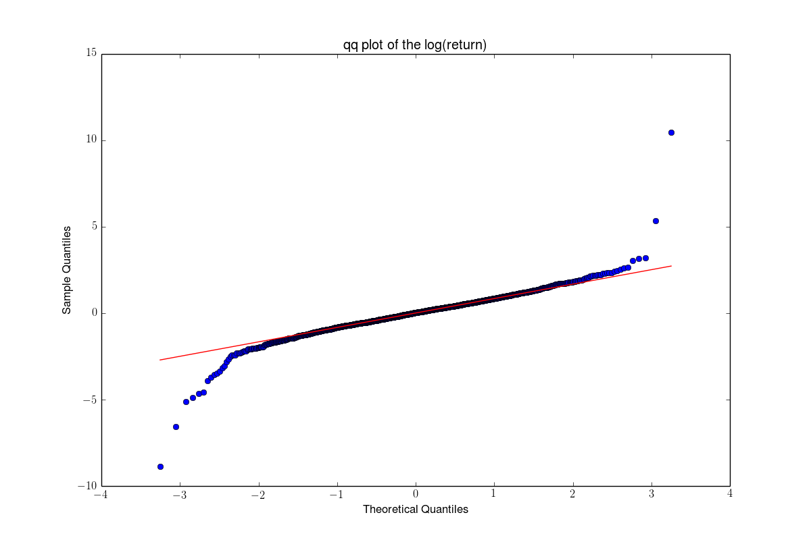
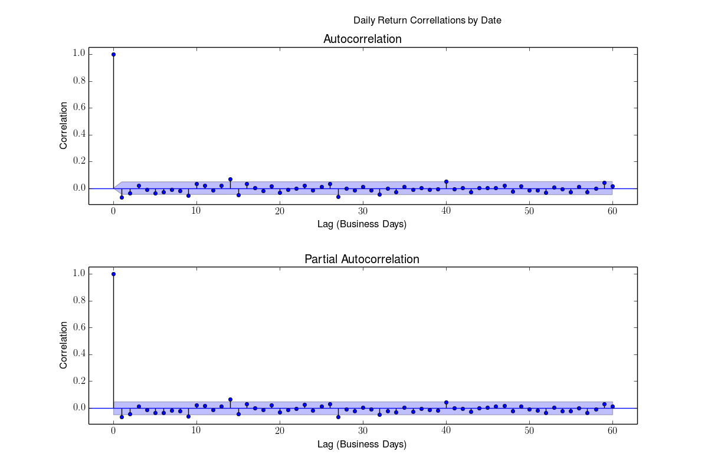
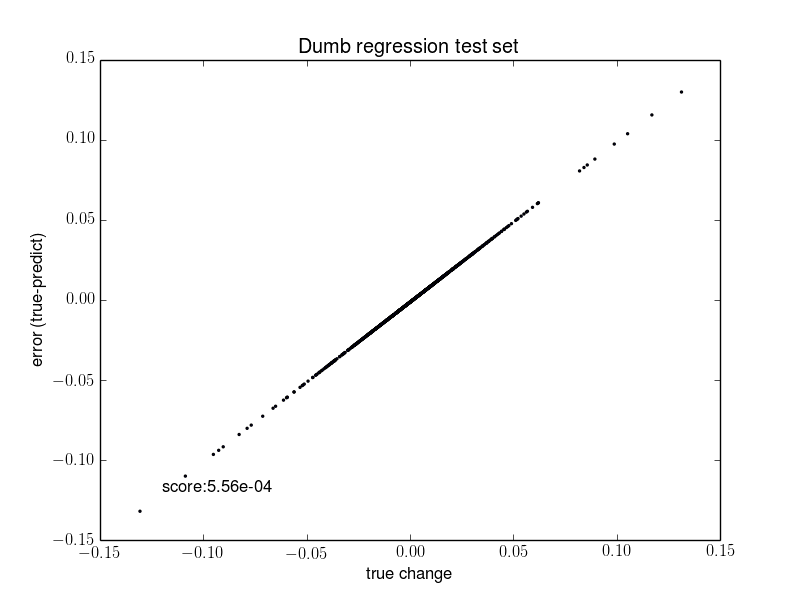
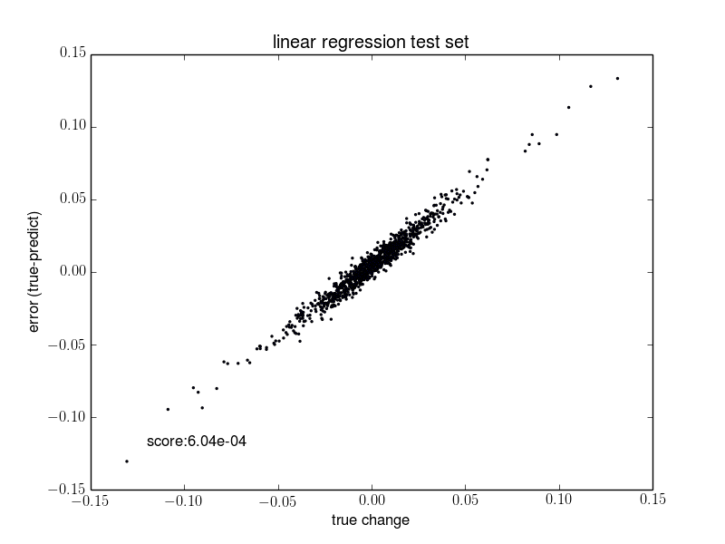
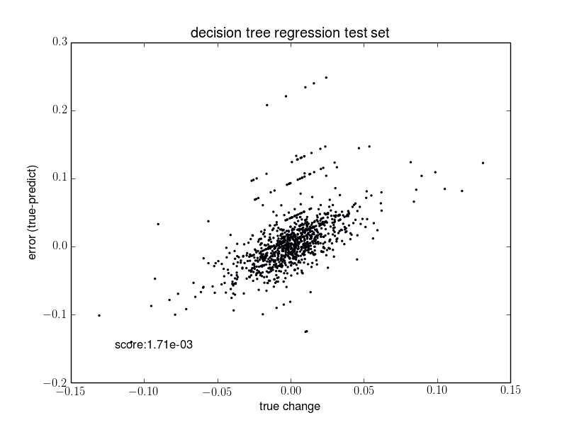
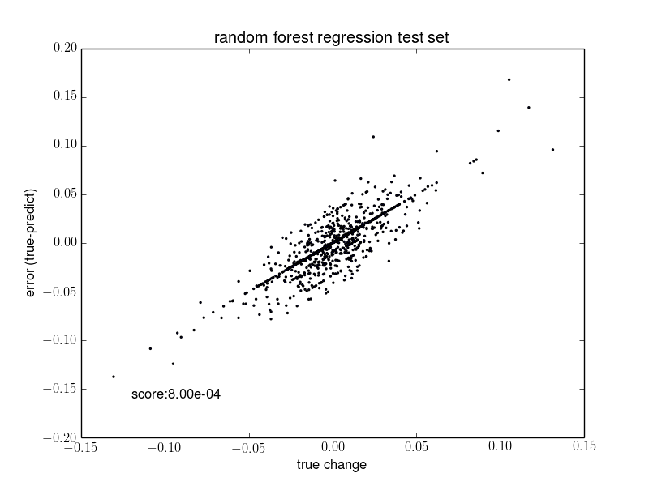
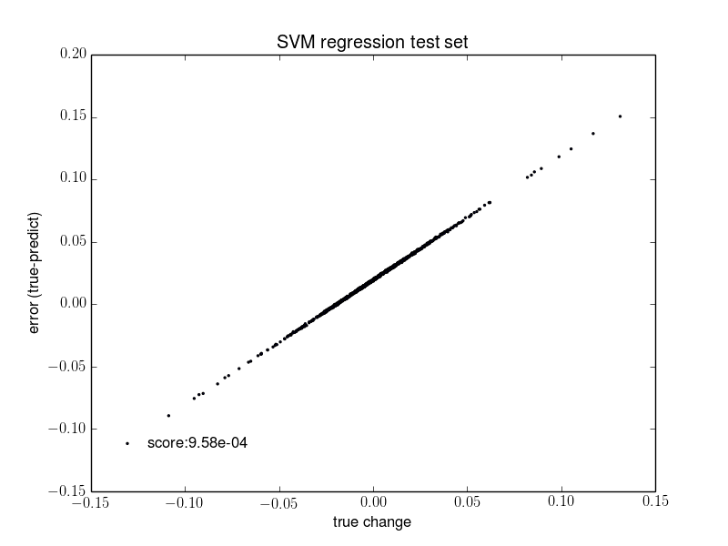

Oil Prices
The simplest explanation of oil prices is that they are driven by supply and demand. Events that impact the availability of oil (supply) or the desire for oil (demand) should change the price. Using the front month contract, I examined the changes in price, attempting to determine whether daily movements are predictably correlated with geopolitical events.
Price Correlation
First, the autocorrelation and partial autocorrelation should reveal any major trends that we should remove from the time-series.
The correlations show that there is a strong dependence on yesterday's price. So we can use yesterday's price as our first prediction. Then we can predict the residual using more advanced methods.
Predicting the Residuals
Instead of examining the residual directly, I define a transformed percent error as log(residual/yesterday's price). This has the nice property of being distributed about zero and being nearly normal.
The QQ plot shows that the data is close to normally distributed with some additional scatter at the tails.
The correlations now show very low correlation of residuals, with a small remaining correlation at a lag of 1 day. I attempt to model this lag using several economic and Geopolitical indicators.
Economic Factors Affecting the Residuals
I included these factors in an attempt to model the residuals:- CPI
- - The Consumer Price Index is a common measure of inflation.
- GDP
- - Gross Domestic Product provides a measure of the size of the economy. A larger economy generally requires more energy, although technological advances can mitigate this.
- Population
- - US Population provides another measure of the size of the energy demand. A larger population generally requires more energy, although technological advances can also mitigate this.
- Recession Probability
- - The St. Louis Fed provides a measure of recession probability that may correlate with oil prices. If the likelihood of recession increases and the economy slows down, there will be downward pressure on prices.
- Stress Index
- - The St. Louis Fed also provides a measure of financial stress. In times of large financial stress, there may be increased volatility of oil prices.
- UM Sentiment
- - The University of Michigan measures economic sentiment, which may also correlate with increased volatility of oil prices as people change their spending habits due to changes in the perception of the health of the economy.
- Federal Funds Rate
- - Changes in the Federal Funds Rate can be indicative of expected increases in inflation which may be predictive of inflationary effects on oil prices.
Political Factors Affecting the Residuals
Political events may also affect oil prices, since conflict, especially in oil producing countries, can increase the uncertainty in the future availability of oil. To represent this, we examine the general number of events, the number of unconventional (terrorist-like) attacks, and conventional fighting in the top 5 oil exporters (Saudi Arabia, Russia, Iran, Nigeria, and Norway) and the top 5 oil importers (US, Japan, South Korea, Germany, and France).
Conflict in oil exporters can directly reduce supply. Conflict involving the more politically and economically stable importers is a more general measure of the political instability of the world, which also may directly limit supply or give the perception of potential future supply problems.
Transformation of the Factors
The raw value of GDP, CPI, or number of terrorist events should not be relevant to daily returns on oil prices. What we want is a relative measure so that we can distinguish improving conditions from worsening ones. To accomplish this, each factor is transformed by dividing the current value by the moving average for that factor. This preserves daily changes in the factors and scales them by the current average conditions. The daily changes, especially if they are surprising, should be correlated with price changes. Longer term effects will likely already be priced into the current price. With this choice of model, we have no possibility of determining long-term changes.Training and Testing Sets
I train on data from 2001 through 2006 and test on 2009-2010. This prevents any information from the test set being incorporated into the trained model.
Benchmark Model
As a benchmark model, I choose to predict a residual of 0, essentially saying that the best prediction is yesterday's price. The mean-squared error, my metric for accurate prediction, is 5.56e-4.
Fitted Models
I fit a linear regression model, Decision Tree, Random Forest, and SVM model. The random forest and SVM models were cross-validated to optimize hyperparameters for each model using a grid search of the hyperspace. A comparison of each model is shown below.
  All models do worse than the Dummy model. Which suggests that there is no predictive power in including these measures.
Results and Future Work
There is no suggestion of geopolitical event effects on daily oil price returns. If I were to further refine this model, I would investigate the GDelt data at more depth. Perhaps weighting events by proximity to oil production using a map of know oil reserves would improve results. Effects like production reports, earnings reports of oil companies and regulatory announcements made by the government may also be a source of daily changes depending on whether they are surprises to oil traders.